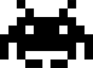

Bienvenido a, Didaktikapp Santurtzi
En esta aplicacion veras los distintos puntos de interes de Santurtzi acompañados de interesantes y
divertidas actividades
A contuacion te haremos te daremos unas pequeñas explicaciones de como se juega :)
Mapa

El juego es simple, como podeis ver en el mapa van a haber dos tipos de marcadores, el azul que en este caso sois vosotros y los rojos que son los puntos a los que teneis que ir, para interactuar con el marcador los circulos que salen tienen que tocarse entre si
Cuando esteis cerca dentro del punto saldra informacion y podreis darle a empezar la actividad
Informacion
Cuando entreis en la actividad primero os podra salir una breve explicacion junto con un audio o video, prestad mucha atencion a cada cosa que os sera util para los siguientes juegos!
Juegos

En esta aplicacion encontrareis distintos tipos de juegos, desde algunos simples como juntar texto a la imagen que corresponde u otros mas entretenidos como un puzzle, ¡Esperamos que os gusten los juegos!